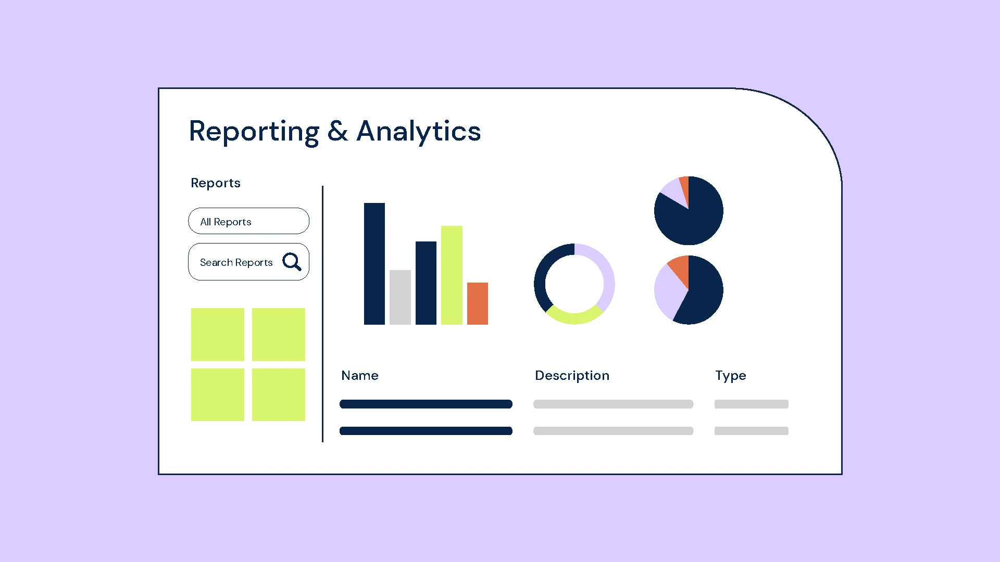

Welcome to HackerSpace Library
Discover a world of knowledge and information. Explore our diverse catalog, access a variety
of services, and get in touch with us for any assistance you may need.
An Online Library Management System (LMS) is a digital platform designed to manage and
streamline the operations of a library. It offers various features that enhance the efficiency of
library administration and improve the user experience for library patrons.
Overall, an online library management system modernizes the way libraries operate, making it easier for
both staff and patrons to interact with the library’s resources and services.
Key Components
Catalog Management:
- Inventory Control: Maintains a comprehensive catalog of books, journals, digital resources, and other
materials.
- Metadata Management: Stores detailed information about each item, including author, title, publication
year, and genre.
Circulation Management:
- Check-In/Check-Out: Facilitates the borrowing and returning of library items.
- Due Dates and Renewals: Automatically tracks due dates and allows for renewals.
- Efficient Borrowing: The LMS streamlines the process of borrowing materials by automating the check-out procedure. Users
can easily check out books, journals, or digital resources, and the system records the transaction in real-time.
- Self-Service Kiosks: Many modern LMS systems include support for self-service kiosks, allowing users to check out and
return items independently, reducing wait times and freeing up staff for other tasks.
- Automatic Due Dates: When an item is checked out, the system automatically assigns a due date based on the library’s
lending policies. This helps users know when items are due back and prevents accidental late returns.
- Late Fees: The system tracks overdue items and can automatically calculate and apply late fees, if applicable. This
encourages timely returns and ensures that resources are available to other users.
Reservation and Requests:
- Book Reservations: Enables users to reserve books that are currently checked out.
- Interlibrary Loans: Manages requests for items from other libraries if they are not available in the
local library.
- Hold Requests: Users can place a hold on books or other materials that are currently checked out. Once the item is
returned, the system automatically notifies the user that it is available for pickup.
Search and Discovery:
- Advanced Search: Provides search functionality to find items by title, author, ISBN, and other criteria.
- Recommendation Systems: Suggests items based on user preferences and borrowing history.
- Multi-Criteria Search: Users can search for materials using various criteria such as title, author, subject, publication
date, ISBN, and keywords. This allows for precise and targeted searches, making it easier to find specific resources.
Digital Resources Access:
- E-books and Journals: Provides access to digital content like e-books and online journals.
- Database Integration: Connects to various databases for research and reference materials.
- Digital Resource Access: Monitor the usage of digital resources such as e-books, online journals, and databases. This
data is essential for determining which digital materials are most popular and valuable to users.
Reporting and Analytics:
- Usage Statistics: Generates reports on library usage, including the number of books borrowed and user
activity.
- Inventory Reports: Tracks the status of library materials, including lost or damaged items.
- Borrowing Trends: Track the borrowing and return patterns of library materials. Identify popular books, journals, and
digital resources, helping the library manage its inventory more effectively.

Communication and Alerts:
- Notifications: Sends reminders for overdue items, upcoming due dates, and new arrivals.
- Feedback Mechanisms: Allows users to provide feedback or report issues.
- Due Date Reminders: Patrons receive automatic reminders about approaching due dates for borrowed items. This reduces the
likelihood of overdue fines and helps manage the circulation of materials efficiently.
- Overdue Notices: Alerts are sent when an item is overdue, reminding users to return or renew the item.
Benefits
- Efficiency: Automates routine tasks such as cataloging, circulation, and user management, reducing manual work
and errors.
- Accessibility: Provides remote access to the library’s catalog and digital resources, allowing users to browse
and borrow items from anywhere.
- Enhanced User Experience: Offers a user-friendly interface for searching, reserving, and managing library
materials.
- Improved Resource Management: Helps librarians manage inventory, track usage, and generate reports to make
informed decisions.
- Scalability: Accommodates a growing number of users and materials, adapting to the expanding needs of the
library.
Overall, an online library management system modernizes the way libraries operate, making it easier for both staff
and patrons to interact with the library’s resources and services.